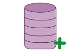

Creación de un repositorio
Esta guía proporciona una lista comandos importantes para la creación de un proyecto en git, además, se muestran algunos comandos cotidianos.
git init
El comando git init ayuda a inicializar el directorio que alojará nuestro proyecto creando una subcarpeta .git, con esto podremos ejecutar todos comandos pertenecientes a git.
git init
Ejemplo
Suponiendo que ya tienes un proyecto en tu computadora y quieres inicializar el repositorio, las pasos que se tienen que hacer son los siguientes:
$ cd /home/usuario/Documentos/gitProject
$ ls
file1.c file2.c file3.c file4.c file4.c
morefiles
$ git init
Initialized empty Git repository in /home/usuario/Documentos/gitProject
Hasta este momento tenemos inicializado el repositorio, y nos dice que es un repositorio vacío, esto pasa porque los archivos aún no son cargados al repositorio local.
Ahora veremos como agregar los archivos existentes en el directorio, utilizaremos el comando git add *, con esto el repositorio hará el seguimiento de estos archivos y utilizaremos git status para ver que cambios se han hecho en el repositorio local.
$ git add *
$ git status
en la rama master
commit inicial
cambios para hacer commit:
(use «git rm --cached <archivo>...>> para eliminar stage)
new file: file1.c
new file: file2.c
new file: file3.c
new file: file5.c
new file: file6.c
new file: morefiles/file1.c
new file: morefiles/file2.c
new file: morefiles/file3.c
new file: morefiles/file5.c
new file: morefiles/file6.c
git clone
Git clone nos sirve para copiar un repositorio existente, creando automáticamente una conexión remota llamada origin que señala al proyecto original, gracias a esta conexión podemos interactuar con el repositorio central.
git clone <repo>
Ejemplo
Si tenemos el repositorio en la página oficial de git, puedes simplemente clonar el repositorio, lo único que necesitas es la url del repositorio, la misma página git te especifíca la url.
$ git clone https://gitlab.com/usuario/gitProject.git
Clonar en «gitProject»...
Username for 'https://gitlab.com': user_email@hotmail.com
Password for 'https://faby_ram01@hotmail.com@gitlab.com':
remote: Counting objects: 4, done.
remote: Compressing objects: 100% (3/3), done.
remote: Total 4 (delta 1), reused 0 (delta 0)
Unpacking objects: 100% (4/4), done.
Checking connectivity... hecho.
Podemos entrar al directorio y ejecutar un ls para verificar que todos los archivos del repositorio se encuentren en la carpeta local del repositorio.
git config
Este comando le permite configurar la instalación de git, en este comando se puede definir desde la información del usuario hasta las referencias para el comportamiento del repositorio. A continuación se muestran varias opciones comunes de configuración.
git config user.name <name>
Define el nombre del usuario que se utilizará para generar todas las confirmaciones en el repositorio. Por lo general, tendrá que utilizar --global para establecer las opciones de configuracion del usuario.
Define el nombre del usuario:
git config user.name <name>
Define el email del usuario:
git config --global user.email <;email>
Ejemplo
Nos posicionamos en el directorio y tecleamos lo siguiente, los valores de email y usuario deberán ser con los que se registraron en gitlab.
$ git config --global user.name "usuarioGit"
$git config --global user.email "usuarioGit@hotmail.com"
Siguiente